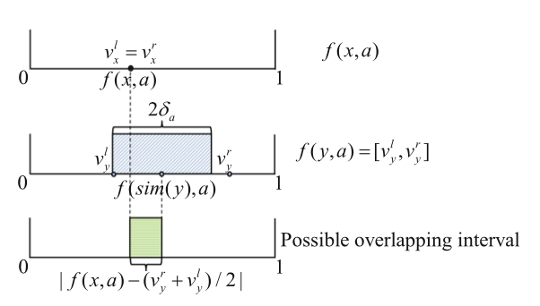

Dié Wu
wd@sicnu.edu.cn
dwu.cse@gmail.com
Selected Publications
( * refers to the students I have advised or co-advised, indicates the corresponding author)
-
 TON
IEEE/ACM Transactions on Networking (TON), 2024.
TON
IEEE/ACM Transactions on Networking (TON), 2024. -
 INFOCOM
IEEE Conference on Computer Communications (INFOCOM), 2024.
INFOCOM
IEEE Conference on Computer Communications (INFOCOM), 2024. -
TMCIEEE Transactions on Mobile Computing (TMC), 2024.
-
 PRICAIPacific Rim International Conference on Artificial Intelligence (PRICAI), 2023.
-
TOSNACM Transactions on Sensor Networks (TOSN), 2023.
-
INFOCOMIEEE Conference on Computer Communications (INFOCOM), 2023.
-
INFOCOMIEEE Conference on Computer Communications (INFOCOM), 2023.
-
 WCNC
IEEE Wireless Communications and Networking Conference (WCNC), 2023.
WCNC
IEEE Wireless Communications and Networking Conference (WCNC), 2023. -
 CHAOS
Chaos : An Interdisciplinary Journal of Nonlinear Science (CHAOS), 2022.
CHAOS
Chaos : An Interdisciplinary Journal of Nonlinear Science (CHAOS), 2022. -
ITAICIEEE Joint International Information Technology and Artificial Intelligence Conference (ITAIC), 2022.
-
MSNIEEE International Conference on Mobility, Sensing and Networking (MSN), 2021.
-
 OE
Optics Express (OE), 2021.
OE
Optics Express (OE), 2021. -
 TVT
IEEE Transactions on Vehicular Technology (TVT), 2021.
TVT
IEEE Transactions on Vehicular Technology (TVT), 2021. -
TECSACM Transactions on Embedded Computing Systems (TECS), 2018.
-
 IEEE Sens. J.
IEEE Sensors Journal, 2017.
IEEE Sens. J.
IEEE Sensors Journal, 2017. -
 RFID
IEEE International Conference on RFID(RFID), 2016.
RFID
IEEE International Conference on RFID(RFID), 2016. -
RFIDIEEE International Conference on RFID(RFID), 2015.